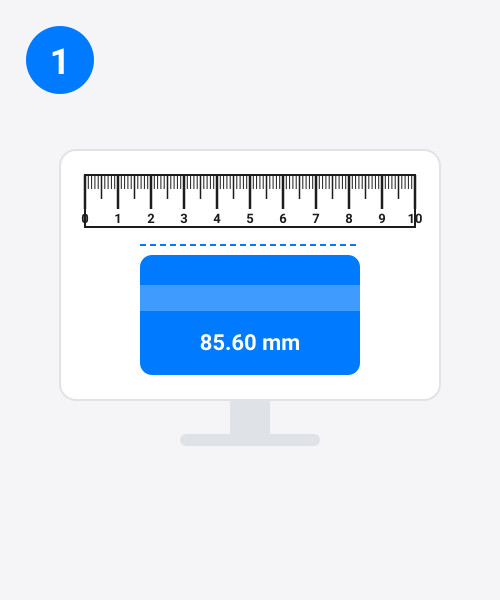
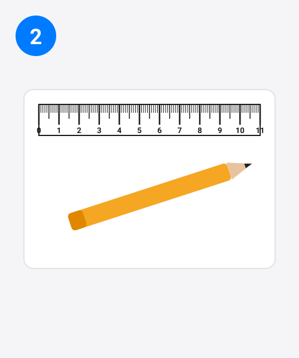
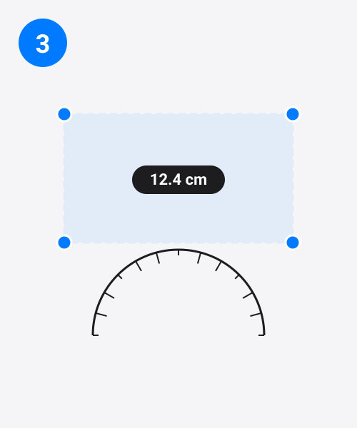

Введите диагональ экрана для мгновенной калибровки — или откройте все параметры.
Для пересчёта пикселей используется текущее PPI линейки (96).
Обновлено: 21 октября 2026 г. · Команда TrueRuler
Онлайн-линейка превращает ваш экран в настоящий измерительный инструмент. TrueRuler рисует шкалы в сантиметрах, миллиметрах и дюймах в истинном физическом размере, определяя плотность пикселей вашего устройства, — либо после однократной калибровки по размеру экрана или обычной банковской карте. Это бесплатно, не требует установки и работает на любом телефоне, планшете, ноутбуке или мониторе.
Quick start
Онлайн-линейка — это веб-инструмент для измерений, который показывает линейку на экране в реальном физическом размере. Она вычисляет плотность пикселей вашего дисплея (PPI) и рисует каждый сантиметр, миллиметр и дюйм так, чтобы они совпадали с обычной линейкой, приложенной к экрану. После однократной калибровки вы сможете измерять небольшие предметы прямо на дисплее — без установки приложений.
Ваш экран не знает, что такое дюйм, — он знает только пиксели. Мост между ними — это плотность пикселей, измеряемая в PPI (пикселей на дюйм). Если на вашем экране 141 пиксель на дюйм, линейка рисует один дюйм ровно как 141 пиксель, один сантиметр — как 55,6 пикселя, а один миллиметр — как 5,56 пикселя.
Есть нюанс: два монитора могут иметь одинаковое разрешение 1920×1080, но диагонали 22 и 32 дюйма — те же пиксели, но совсем разный реальный размер. Именно поэтому онлайн-линейка должна узнать истинный PPI вашего экрана. TrueRuler делает это двумя способами: распознаёт популярные телефоны, планшеты и ноутбуки по базе устройств и применяет их заводской PPI либо вычисляет PPI по диагонали экрана.
Ещё одна деталь: браузеры работают в CSS-пикселях, которые могут отличаться от физических пикселей на дисплеях с высокой плотностью («Retina»). TrueRuler считывает пиксельное соотношение вашего устройства и пересчитывает автоматически, а также предупреждает, если масштаб браузера не равен 100%, — ведь масштабирование меняет размер CSS-пикселя.



Когда вы вводите диагональ своего экрана, линейка вычисляет PPI по теореме Пифагора:
PPI = √(ширина² + высота²) ÷ диагональ в дюймах
Пример расчёта. Ноутбук с диагональю 15,6 дюйма и экраном 1920×1080: √(1920² + 1080²) = √4 852 800 ≈ 2202,9 пикселя по диагонали. Делим на 15,6 дюйма → 141,2 PPI. Значит, один дюйм рисуется как 141,2 пикселя, один сантиметр — как 55,6 пикселя (141,2 ÷ 2,54), а один миллиметр — как 5,56 пикселя.
How reliable is each калибровка method? Not every method deserves the same trust:
Whichever method you use, recalibrate when you change monitors, display scaling or resolution — a калибровка only matches the screen it was made on.
Линейка показывает метрическую и дюймовую шкалы рядом. Используйте миллиметры для точной работы, сантиметры для повседневных измерений, а дюймы — для измерений в дюймовой системе. Встроенный конвертер выше также переводит метры, футы, ярды и пункты.
| Единица | В сантиметрах | В миллиметрах | В дюймах |
|---|---|---|---|
| 1 дюйм | 2,54 см | 25,4 мм | 1 дюйм |
| 1 сантиметр | 1 см | 10 мм | 0,3937 дюйма |
| 1 миллиметр | 0,1 см | 1 мм | 0,03937 дюйма |
| 12 дюймов | 30,48 см | 304,8 мм | 12 дюймов |
Reading the scale: the longest lines mark whole centimetres or inches, the medium lines mark half units, and the shortest lines mark millimetres or sixteenths of an inch. A full foot — 12 inches, 30.48 cm — fits on screens from about 14 inches up, so on most full-size laptops the on-screen ruler works as a 12 inch ruler.
Нажмите Rotate, чтобы поменять местами горизонтальную и вертикальную линейки, — удобно для измерения высоты или когда экран узкий. Вертикальная линейка работает точно так же, как горизонтальная: в сантиметрах, миллиметрах и дюймах.
Нажмите Measure и растяните рамку поверх любого объекта на экране — фотографии, схемы, изображения товара. Рамка показывает ширину × высоту в реальном времени в см, мм и дюймах. Тяните за маркеры, чтобы изменить размер, за центр — чтобы переместить, а для точной подгонки используйте стрелки на клавиатуре. Кнопка Copy копирует результат в буфер обмена.
Everyday uses go well beyond the toolbox: check a phone screen protector or case before you order it, size a craft cut or a photo print, measure screws, bolts and other small parts for a repair, confirm a parcel fits its packaging, or finish a school measurement when no physical ruler is at hand. If it fits on your screen, you can measure it.
Чтобы узнать свой размер кольца, оберните тонкую полоску бумаги вокруг пальца, отметьте место нахлёста, затем приложите полоску к линейке на экране и измерьте длину в миллиметрах — ювелиры обычно определяют размер кольца по окружности пальца в мм. Если кольцо уже есть, откройте рамку Measure и растяните её по внутреннему диаметру кольца. Размер пальца слегка меняется в течение дня, поэтому для надёжного результата измеряйте вечером.
Press Protractor to overlay a full 180° protractor. Drag either arm to the angle you want to measure; the readout shows the degrees live. Drag the centre to move the whole protractor. Angles do not depend on calibration — a degree is a degree at any PPI — so the protractor stays correct even on a screen the ruler has not calibrated.
Нажмите Print, чтобы получить бумажную линейку в точном реальном размере: 18 см с одного края и 7 дюймов с другого. Печатайте в масштабе 100% (никогда не выбирайте «по размеру страницы»), вырежьте по краю и сверьте с известным предметом. Бумажная линейка пригодится, когда нужно измерить что-то вдали от экрана.
| Способ | Лучше всего для | На что обратить внимание |
|---|---|---|
| Обычная линейка | Повседневная точность, которой можно доверять | Не всегда под рукой |
| Рулетка | Крупные предметы и помещения | Низкая точность меньше миллиметра |
| AR-приложения для измерений | 3D-пространства и мебель | Искажения камеры; нужна установка |
| Печатная линейка | Истинный размер на бумаге | Нужны принтер и масштаб 100% |
| TrueRuler (онлайн-линейка) | Быстрые измерения на любом экране | Нужна однократная калибровка; держите масштаб на 100% |
Да — после калибровки точность на большинстве экранов составляет около миллиметра. Зелёный индикатор означает, что ваше устройство распознано и применена заводская плотность пикселей. Если устройство не распознано, откалибруйте по банковской карте — это самый точный способ.
Выберите любой из трёх способов: найдите своё устройство в списке, введите диагональ экрана либо приложите стандартную банковскую карту (шириной 85,60 мм) к синей направляющей и двигайте ползунок, пока они не совпадут. Калибровка сохраняется автоматически.
Почти всегда причина в том, что два монитора имеют одинаковое разрешение, но разный физический размер: панель 1920×1080 может быть и 22, и 32 дюйма. Линейка не умеет угадывать, поэтому один раз откалибруйте этот монитор по банковской карте — и показания останутся точными.
As long as your screen. Laptops with screens of 14 inches or more show a full 12-inch ruler (30.48 cm); phones show less. For a fixed-length reference, print the paper ruler: exactly 18 cm on one edge and 7 inches on the other at 100% scale.
Да. Переключите панель инструментов на mm — и линейки перерисуются с миллиметровыми делениями и нумерацией: идеально для точных мелких измерений.
Да. Вёрстка подстраивается под маленькие экраны, а большинство популярных телефонов и планшетов есть в базе устройств для автоматической калибровки. На сенсорных экранах перетаскивайте измерительную рамку пальцем.
Нет. В отличие от AR-приложений для измерений, TrueRuler никогда не использует камеру — измерения строятся на плотности пикселей вашего экрана, поэтому нечего наводить и не нужно никаких разрешений.
Да, полностью бесплатно: без учётной записи и без установки. Вся обработка происходит в вашем браузере; ничего из измеренного никуда не загружается.
Да. Оберните полоску бумаги вокруг пальца, отметьте нахлёст, приложите её к линейке на экране и измерьте миллиметры — ювелиры определяют размер кольца по окружности пальца. Или растяните рамку Measure по внутреннему диаметру кольца.
Нажмите Print и печатайте в масштабе 100% — никогда не выбирайте «по размеру страницы», иначе линейка уменьшится. Вырежьте по краю и сверьте с банковской картой (85,60 мм), прежде чем доверять измерениям.
Ваша калибровка, выбор единиц и тема сохраняются в локальном хранилище браузера на вашем устройстве. Очистка данных сайта сбрасывает их; на сервер ничего не отправляется.
PPI означает «пикселей на дюйм» — это плотность пикселей вашего экрана. Линейка должна знать это число, чтобы переводить пиксели в настоящие сантиметры и дюймы. Именно это одно число отличает декоративную картинку линейки от настоящего измерительного инструмента.
Распечатайте страницу в масштабе 100% (никогда не выбирайте «по размеру страницы»). Вырежьте по краю — и у вас настоящая линейка 18 см / 7 дюймов.
Выберите один способ. Калибровка банковской картой — самая точная.
Введите диагональ из характеристик устройства (коробка или настройки → «Об устройстве»).
Приложите любую банковскую карту к синему прямоугольнику и двигайте ползунок, пока прямоугольник точно не совпадёт с картой. Все банковские карты имеют размер 85.60 × 53.98 мм.